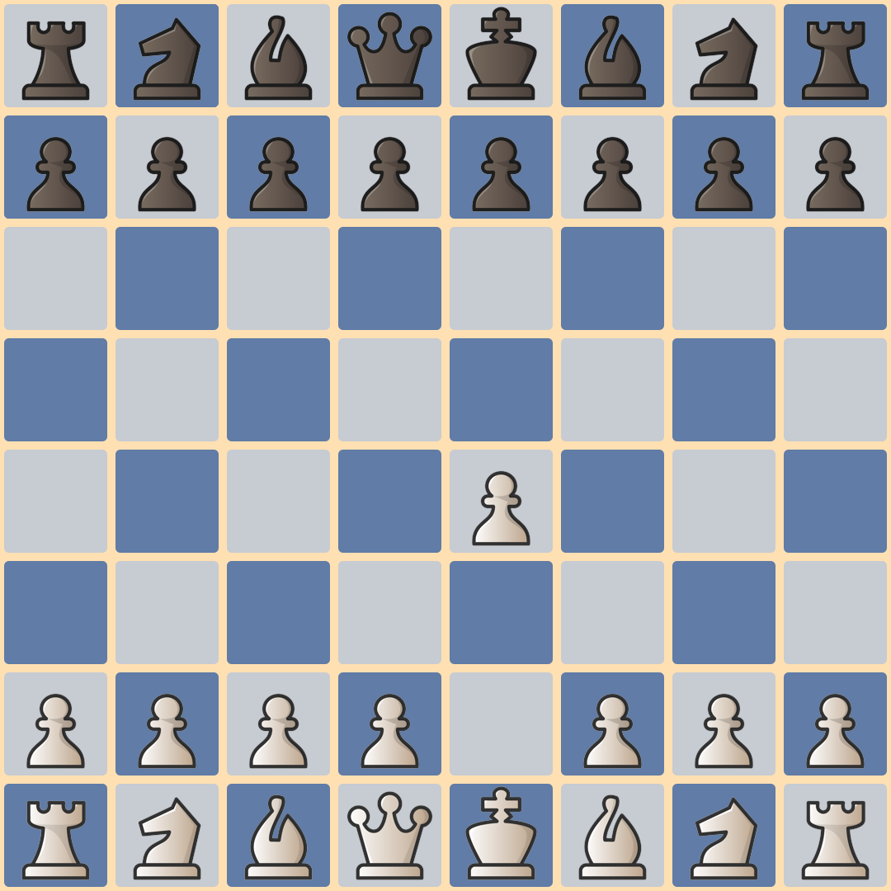
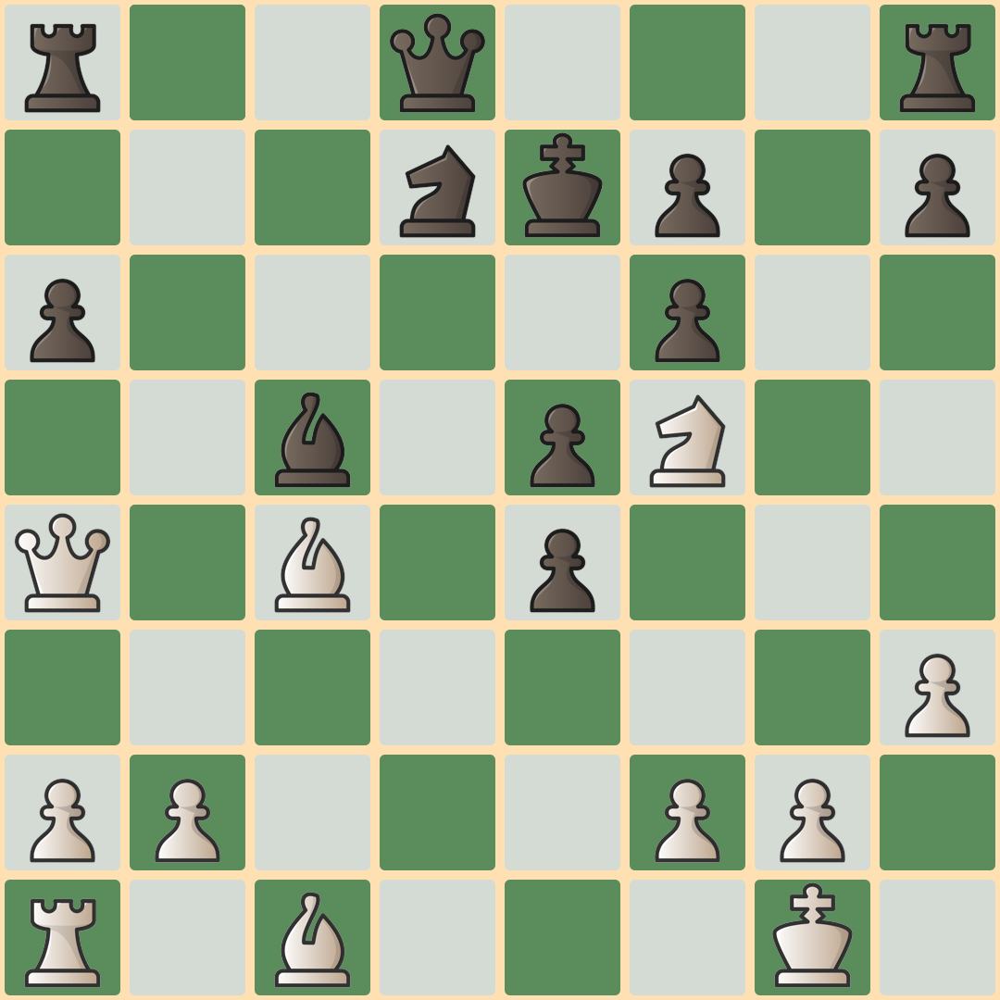
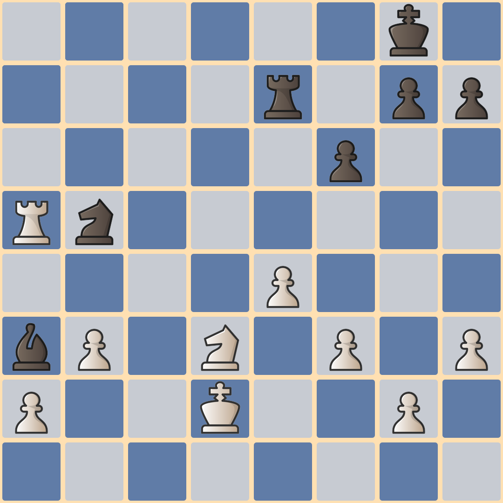

ja que lu dios
introductionn
Dance of names is the first jaqueludio. An stochastic prelude based on chess games for a group of people. A little tribute for men and women who have played the best chess during its long history. This is a game designed for a group of at least 32 people, although ideally they must be more than 64.
a game
The only section of the piece is controlled with a chess game. All the players need to be able to see the board in which the choosen game is reproduced. The selection of the game is completely free. I recommend to choose beautiful and interesting games, although bad games sound the same probably.
time
A Dance of names lasts more or less 90 seconds. The choosen chess game is divided into a series of positions (between 40 and 50). Each position must be fixed during about 2 seconds. So, if the choosen game has 24 moves there can be a board position for each move while if the game has 70 moves it need to be compressed.
cards
Before the begining of a pieace, each player needs a card. A card has a name (from a chess player) and a chess piece.

your card
Here your device chose a card for you. Don't believe me? Try to reload the page.
a melody
Each player compose a brief melody using sounds from the card's name. Sounds which are not part of the name can't be used. The melody must last less than 4 seconds.
Carlsen: carl-sen-sen
Polgar: olé-olé pol-gar
Kasparov: kas-pa-pa-kas
silence
When they see the board with the initial position, all players make silence. That's the moment to choose a piece of the type indicated on the card (a white pawn, a black bishop, the white queen). The player must follow the choosen piece during all the game.

the start
At the first move, all players start singing their melody, with medium intensity (neither too loud nor too soft). They repeat it continuously during the whole game. They can make variations to the melody if they get bored.
changes
It may happen that the piece a player is following is captured. In that case, the player will continue singing but with a ghost voice (whispering).
In addition, each time a player's piece moves, must clap once (make a noise with both hands).
The prelude ends with the image of an empty chess board. In that moment, the players stop singing.
Ovation is permitted.
evaluation
While following his piece on the board, the player can evaluate the position of the game. If he considers that his color has the advantage, he will sing louder. If he senses that his color is at a disadvantage, he will sing softer. The greater the advantage (or disadvantage) the greater the change in intensity.
Those players who take their role very seriously can study the chosen game with the help of a chess engine. I recommend using a Lichess study.
premiere
As usual, the first versions of Dance of names sounded in the 13er Festival del ingenio at the Centro Cultural de la Ciencia.
You can see the video which immortalizes that moment on the festival channel. It includes the explanation of the game and the very brief rehearsals. It all happened in 15 minutes. You can listen to the music right here.
Fischer vs. Najdorf
In 1962, in Varna Olympics, Bobby Fischer destroyed Miguel Najdorf. Here you can listen to the Dance of names based on that game by the audience ofFestival del ingenio.
Karpov vs. Polgar
In 2002, Judith Polgar defeated Anatoly Karpov in a long and intense game. The audience of Festival del ingenio make it sounds like this (recorded by Micaela Montes).
materials
If you want to produce a version of Dance of names you can use the software I made to transform a chess game in pgn format in a series of png images. It is written in Python and use the library python-chess. You can find it at gitlab.
If you want to print a set of cards you can download the A3 file here. If you don't want to print anything you can simply ask the players to look for a virtual card using this link.
write
If you need help to make sound a Dance of names or you have any idea or comment, contact me by mail (feel free to chat with me in telegram or mastodon too).
I can recommend you chess games, help you with the analysis of your choosen one. I can send you the images of the board positions too. If you produce a version let me know. I want to listen!